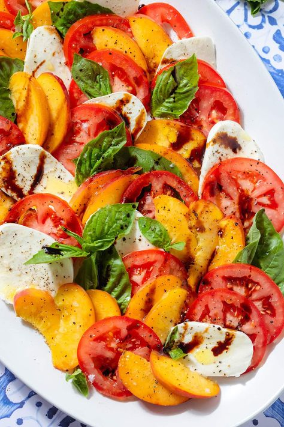
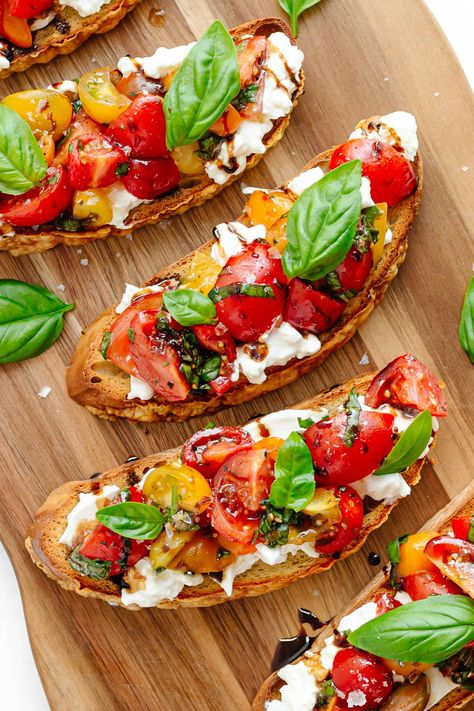
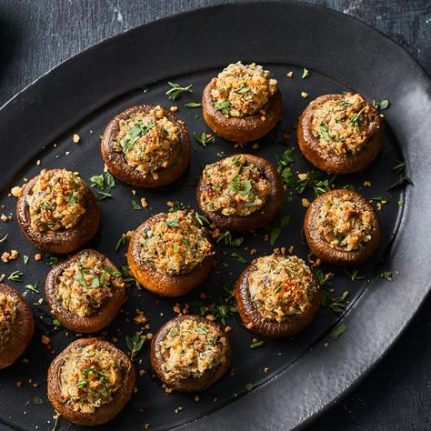
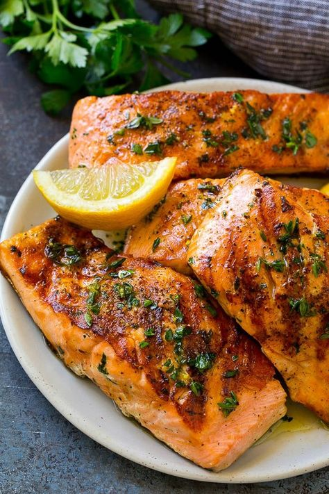
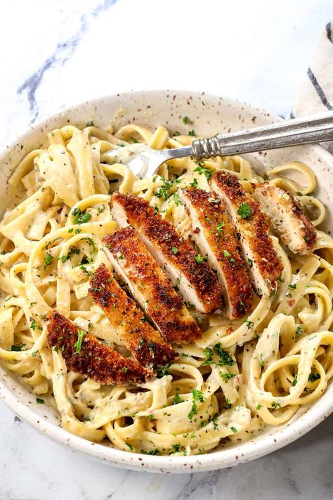
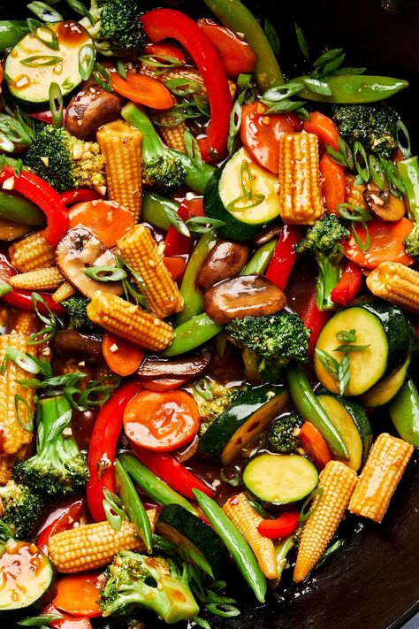
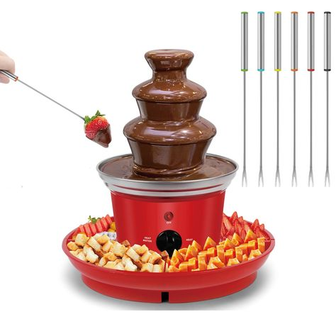
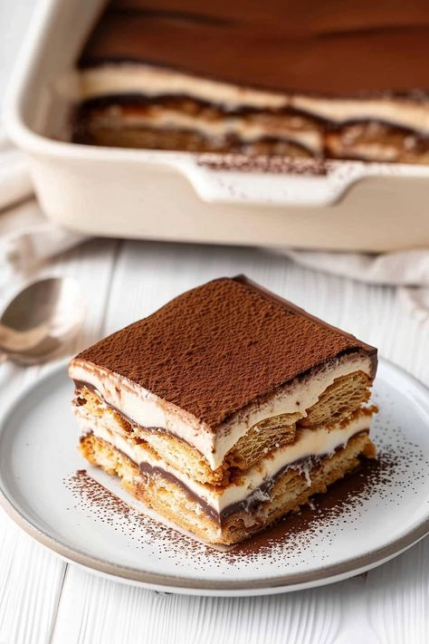
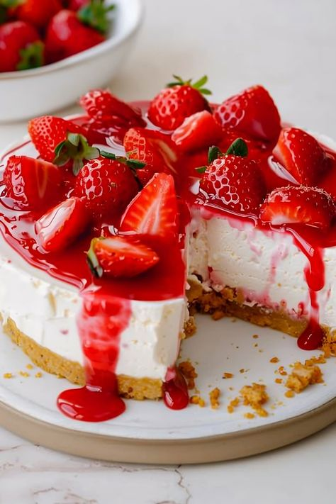

Fresh tomatoes, mozzarella, and basil drizzled with balsamic glaze.
Grilled bread topped with a mixture of diced tomatoes, garlic, and basil.
Baby mushrooms stuffed with a blend of cheese, herbs, and breadcrumbs.
Salmon fillet seasoned and grilled to perfection, served with lemon butter sauce.
Tender chicken breast served over fettuccine pasta with creamy Alfredo sauce.
Mixed seasonal vegetables sautéed in a savory soy sauce, served with rice.
Assorted fruits and marshmallows served with rich chocolate fondue.
Classic Italian dessert made with layers of coffee-soaked ladyfingers and mascarpone cheese.
Rich and creamy cheesecake topped with fresh strawberries and a graham cracker crust.
